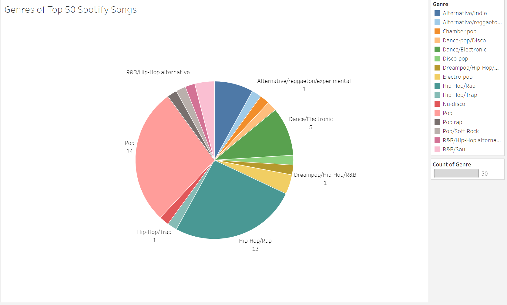
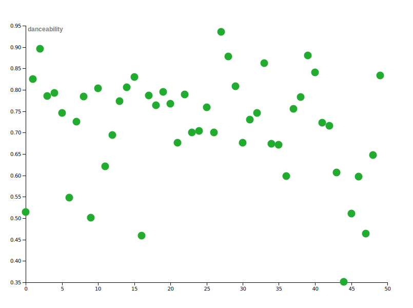
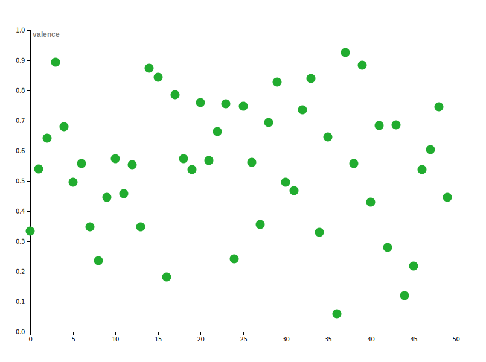

Top 50 Songs on Spotify in 2020
Anna Adebambo | Visualization Technologies 1 | ARTG 5330
Jump back in
Introduction
Many people listen to music for a variety of reasons. In this page, I will explore the most popular songs and look for any similarities and trends among them.
The dataset includes information about the top 50 songs on Spotify in 2020. The data was derived from Spotify. Information about each song's artist, the album it's on, and genre is included. In addition, the following variables are included (hover for definitions):
Energy
Danceability
Key
Loudness
Acousticness
Speechiness
Instrumentalness
Liveness
Valence
Tempo
Duration
Exploratory Data Analysis
For interpreting this dataset, I was interested in learning about which artists and genres had many popular songs. I wanted to see if the artists with the most songs on the top 50 would also be artists in the genres that were present the most. As for the song itself, I will be analyzing the danceability (ease to dance) and valence (positivity) to see whether songs that are structured around a positive emotion and physical movement happen to be the most popular.
Dataset
Open this dataset on Kaggle.
Findings from Visualizations
Top 50 Songs by Genre
28% of songs were pop songs while 26% were hip-hop/rap. It is also important to consider that other genres (reference legend on right) also included pop and hip-hop with subgenres. Pop and hip-hop actually take up more than the 28% and 26% figures including the subgenres.
The pie chart format was used to show the proportions of the songs by percentage of a whole.
All 50 Songs Analysis
In the two following visualizations, each song is represented. One (first dot) on the x-axis is the top song and 50 (last dot) is the 50th top song. The variables (danceability and valence) are represented on the y-axis (left). Bubble charts were used since this would show the position of each song in terms of danceability. Utilizing a bar chart would make it more difficult to discern between songs since there would be 50 bars.
Danceability means it is easier to dance to. In this graph, the majority of songs are 0.65 and up. Therefore, most popular songs were songs that were easier to dance to. This does not mean that all songs with high danceability are dance (genre) songs.
Valence relates to the positiveness to a song. In the graph, it is noted that most songs have a valence level of over 0.5. It is concluded that mainly positive songs were popular in 2020.
Artists and Number of Songs in Top 50
Of 50 songs, seven artists had more than one song in the top 50.
The bubble chart was used since the sizing would be able to emphasize the artists that had more than one songs and how many. Since there were only three numbers (1,2,3), the gradient from Tableau happened to be colors more easily discernable.
- Billie Eilish, Dua Lipa, and Travis Scott (3)
- Harry Styles, Justin Bieber, Lewis Capaldi, and Post Malone (2)
- All Other Artists
Artists with the Most Songs in Top 50
As seen in the bubble chart, Billie Eilish, Dua Lipa, and Travis Scott are tied for the most amount of songs (three) in 2020's top 50 Spotify songs. Take a listen to their top songs to learn more about their musical style.
Conclusion
I hope you found this analysis an interesting way to analyze with music that is taking over the radio. Music is evolving. One "hot topic" in music is the emergence of Tik Tok sounds in the music industry. Remixes to songs released two weeks ago or two decades ago can pop up, resulting in an uptick in streams and sales of the song. There is exploration to be completed about how this affects the charts from year to year especially with the variables analyzed. Feel free to explore any part of the page again using the navigation bar on the left.